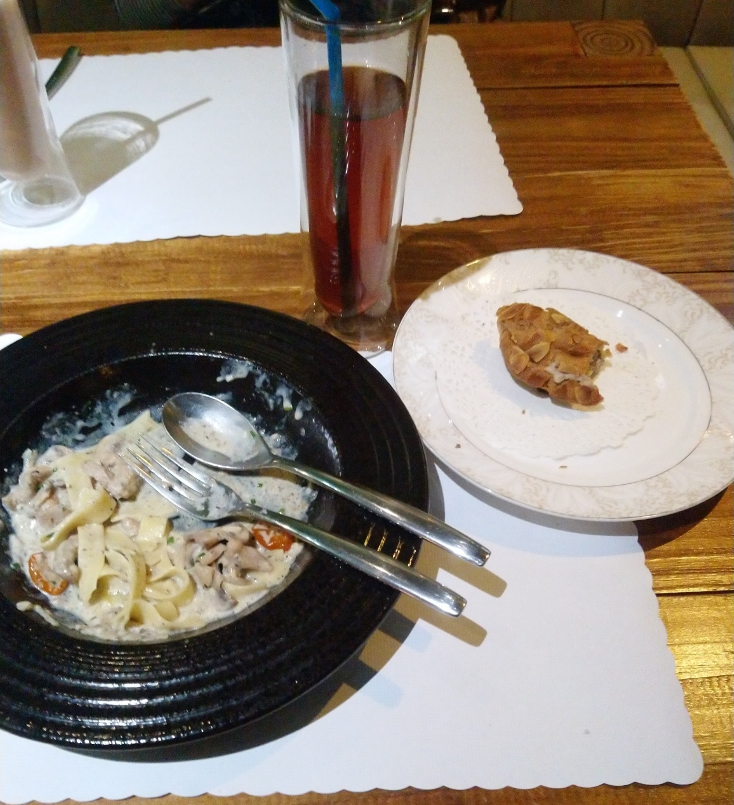
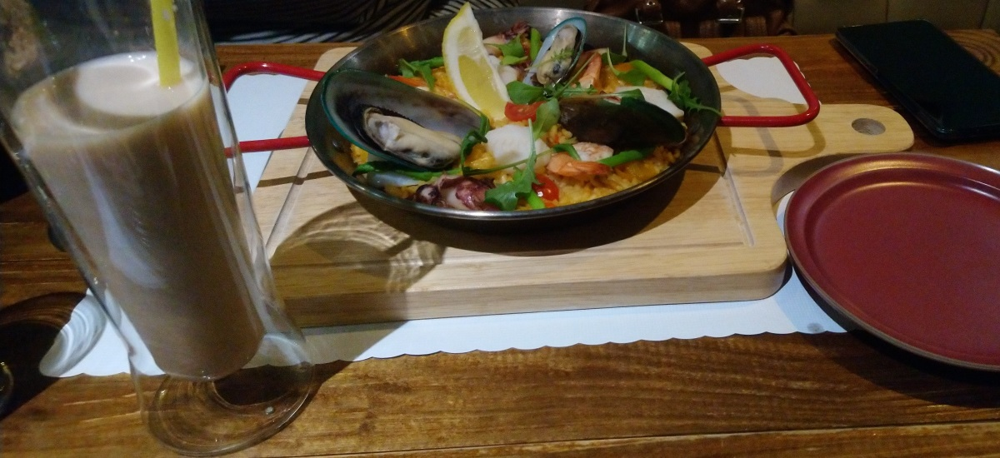
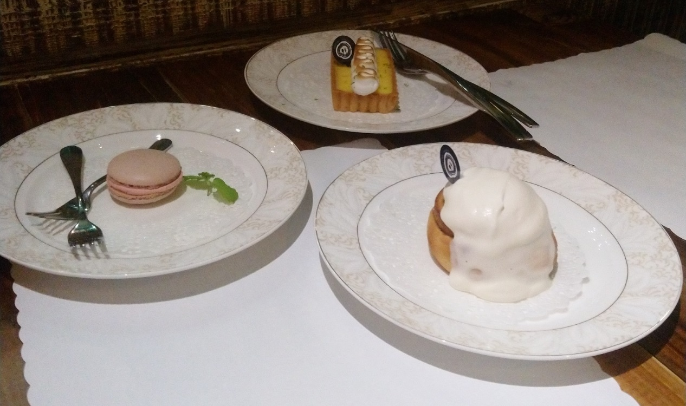

[竹北] HiStory 故事小館
| 餐廳名稱: | HiStory 故事小館 |
|---|---|
| 地 址: | 新竹縣竹北市縣政12街27號 |
| 營業時間: | 週五至週三 11:00 - 16:30 17:30 - 21:30 |
| 週四 公休 | |
| 電話 : | 03 657 2290 |
於 Aug 17, 2019 再編輯。
這間位於竹北的 HiStory 故事小館，品質很優，我們全家去了許多次了， 招待朋友也常約在這間。它在 Facebook, Google 的評價都很不錯， 而且是貨真價實的好評價，評分人數多的情況下，FB 能 4.9 分，很厲害。
但很無奈，也許是地點或是一些其他因素，生意就是平平， 感覺老闆，老闆娘很努力在撐。他們都有在台北高級餐廳歷練過一段時間， 有台北的職業水準，決定返鄉發展，落腳在竹北偏僻的地方， 讓房租不至於太貴，然後利用FB累積粉絲行銷。
今天略餓，吃到一半才想起拍照，真是抱歉啦。 下圖左邊是 松露奶油雞肉鳥巢麵，右邊是快吃完的鮪魚布列斯特。 鳥巢麵 與 雞肉，蘑菇，白醬，松露醬 炒在一起，再加上自己風乾的番茄，整體表現不錯。
鮪魚布列斯特是 某種類似甜甜圈的麵包，圓形的，表面很多杏仁片，中間塗上自製的鮪魚醬， 是不常吃到的食物，適合嚐鮮，不難吃。這是單點，如果當主餐還會加生菜沙拉，比較像是早餐吃的。 
下圖是 西班牙海鮮烤飯，應該是不錯，但我沒吃，這幾年吃了三四間餐廳的西班牙烤飯，略膩。 
有些店飯後甜點是免費的，當然就是一些簡單便宜的甜點。 這間店女主人做的甜點超棒的，非吃不可，加錢也要吃。
左邊是覆盆子馬卡龍，很優。
中間是檸檬塔，又酸又甜，通常來 HiStory 都會點，跟 達利咖啡 並列目前我心目中的竹北檸檬塔冠軍。
右邊是糖漿肉桂捲，感覺食材是用的不錯，但味道不夠甜，覺得Costco的肉桂捲還好吃一點。 
HiStory 故事小館還有許多道菜做的不錯，像 油封鴨腿，巴克斯燉雞，牧羊人派，牛排 等。 老闆宣稱的馬賽濃湯，因為用料太好導致價格高，很少出現在菜單，所以我還沒吃到。
菜單常換，老闆常常陷入 專心把少數幾道菜做好 與 提供客戶很多選擇的矛盾， 菜單有時候只有6、7種選擇，被客人念念後，又增加一些，然後管理太麻煩，又想縮回去， 最近似乎是穩定一點了，靠菜單與黑板上的品項 盡力符合客人需求。
Anyway，全部都很好吃，法式料理與甜點雙絕，推薦大家都去嚐嚐，也祝福老闆，老闆娘事業順利。